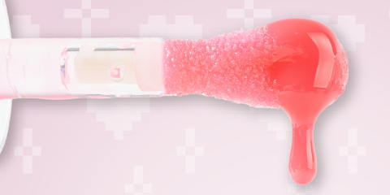
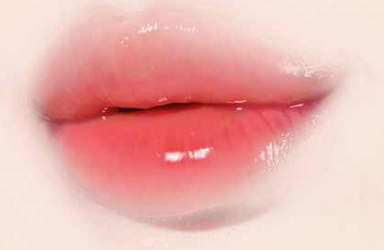
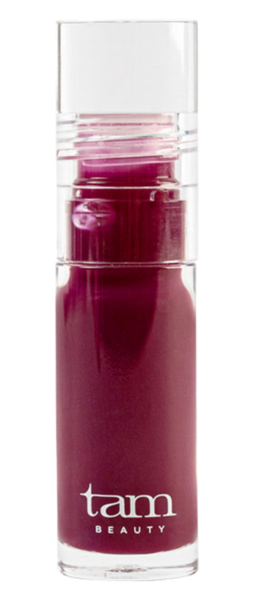
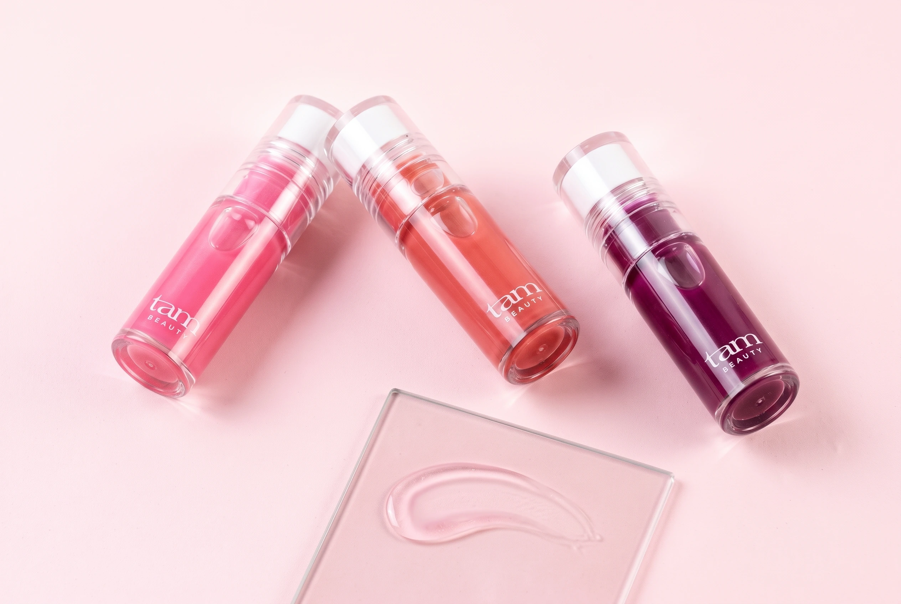

01 / FIRST LOVE
퍼스트 러브
여린 벚꽃 핑크

THE JELLY
PLUMPING LIP OIL
은은한 생기 위에
촉촉함과 윤기를 더해요.

AI 모델 연출 이미지 · 실제 발색은 아래 컬러 가이드에서 확인해 주세요.
THE BIG TIP
입술 중앙은 넓은 면으로,
가장자리는 둥근 끝으로 부드럽게 펴 발라요.

입술 중앙부터 가장자리까지
원하는 양을 부드럽게 펴 발라요.


COOL TOUCH, JELLY GLOW
입술을 감싸는 오일광에
시원한 쿨링감을 더했어요.
맑은 윤기로 도톰해 보이는 립을 연출해요.
해바라기씨오일 · 녹차씨오일 함유
세 가지 립오일 컬러에 공통으로 담았어요.
도톰해 보이는 표현은 메이크업 연출 효과입니다. 쿨링감에는 개인차가 있습니다.
THREE SHADES OF GLOW
은은한 핑크부터 맑은 퍼플까지.
오늘의 립에 원하는 생기를 더해요.
여린 벚꽃 핑크

생기 있는 로즈


맑게 감도는 퍼플

제품·발색은 탐뷰티 공식 원본 사진입니다.
본래 입술색, 도포량, 조명 및 화면 설정에 따라 실제 발색이 달라질 수 있습니다.
YOUR EVERYDAY LIP RITUAL
맨 입술에 얇게 펴 발라
은은한 컬러와 윤기를 더해요.
바른 립 컬러 위에 소량 덧발라
젤리 같은 오일광을 더해요.
용기 입구에서 양을 가볍게 덜어내고,
입술 중앙부터 부드럽게 펴 발라 주세요.

폴리부텐, 옥틸도데칸올, 해바라기씨오일, 녹차씨오일, 브이피/헥사데센코폴리머, 덱스트린팔미테이트, 카프릴릭/카프릭트라이글리세라이드, 실리카실릴레이트, 마이카, 멘틸락테이트, 토코페릴아세테이트, 에틸멘탄카복사마이드, 메틸다이아이소프로필프로피온아마이드, 펜타에리스리틸테트라-다이-t-부틸하이드록시하이드로신나메이트, 티타늄디옥사이드 (CI 77891), 적색104호의(1) (CI 45410), 적색201호 (CI 15850), 로즈마리잎추출물, 1,2-헥산다이올
폴리부텐, 옥틸도데칸올, 해바라기씨오일, 녹차씨오일, 브이피/헥사데센코폴리머, 덱스트린팔미테이트, 카프릴릭/카프릭트라이글리세라이드, 실리카실릴레이트, 마이카, 멘틸락테이트, 토코페릴아세테이트, 에틸멘탄카복사마이드, 메틸다이아이소프로필프로피온아마이드, 펜타에리스리틸테트라-다이-t-부틸하이드록시하이드로신나메이트, 티타늄디옥사이드 (CI 77891), 적색산화철 (CI 77491), 황색 5호 (CI 15985), 적색202호 (CI 15850:1), 흑색산화철 (CI 77499), 로즈마리잎추출물, 1,2-헥산다이올
폴리부텐, 옥틸도데칸올, 해바라기씨오일, 녹차씨오일, 브이피/헥사데센코폴리머, 덱스트린팔미테이트, 카프릴릭/카프릭트라이글리세라이드, 실리카실릴레이트, 마이카, 멘틸락테이트, 토코페릴아세테이트, 에틸멘탄카복사마이드, 메틸다이아이소프로필프로피온아마이드, 적색202호 (CI 15850:1), 펜타에리스리틸테트라-다이-t-부틸하이드록시하이드로신나메이트, 티타늄디옥사이드 (CI 77891), 청색 1호 (CI 42090), 로즈마리잎추출물, 1,2-헥산다이올